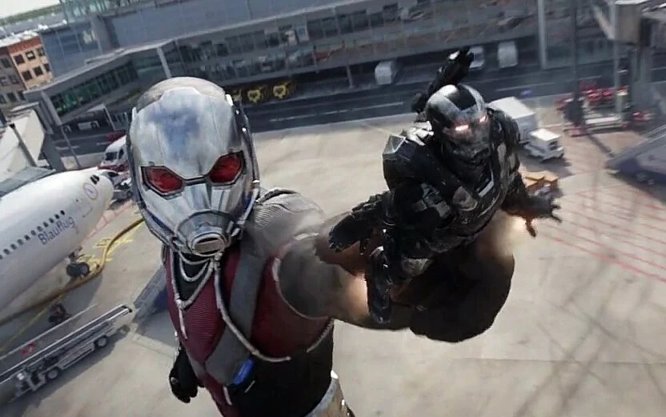
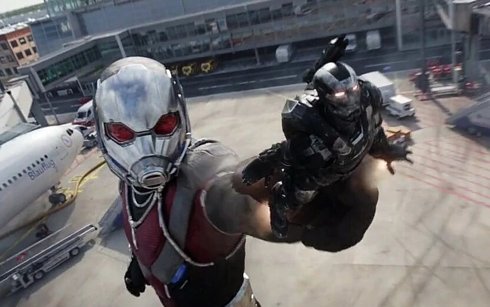

Histoire d'Ant-Man
Scott Lang, un ancien cambrioleur, a été recruté par Hank Pym pour devenir le nouveau Ant-Man. Grâce à un costume spécial, il peut rétrécir à une taille minuscule tout en augmentant sa force. Il a joué un rôle clé dans la bataille contre Thanos en utilisant le royaume quantique pour voyager dans le temps.
Faits intéressants
- Ant-Man a été créé par Stan Lee, Larry Lieber et Jack Kirby en 1962.
- Le premier Ant-Man était Hank Pym, un scientifique brillant.
- Scott Lang a volé le costume d'Ant-Man pour sauver sa fille avant de devenir un héros.
- Le royaume quantique est une dimension clé dans ses aventures.
Citations célèbres
- "Je fais partie des Avengers maintenant !"
- "C'est pas moi, c'est le costume !"
- "On va sauver le monde... encore."
- "Le royaume quantique, c'est plus qu'une théorie."
Galerie des Tenues d'Ant-Man
 
